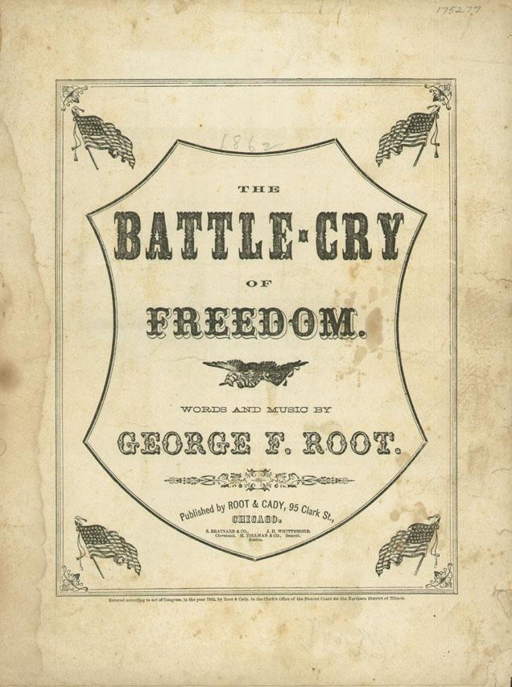

The Battle Cry of Freedom
George F. Root · 1862 · Union
Root wrote it in 1862, right after Lincoln called for 300,000 more volunteers, and it became the North’s great rallying song — soldiers roared “The Union forever! Hurrah, boys, hurrah!” on the march and around the fire. The Confederacy liked the melody so much it wrote its own Southern words to it. A song could be a recruiting poster set to music.
0:00/0:00
“The Battle Cry of Freedom” — acoustic recording, public domain (before 1925). Cover: Root & Cady, Chicago, 1862, public domain.